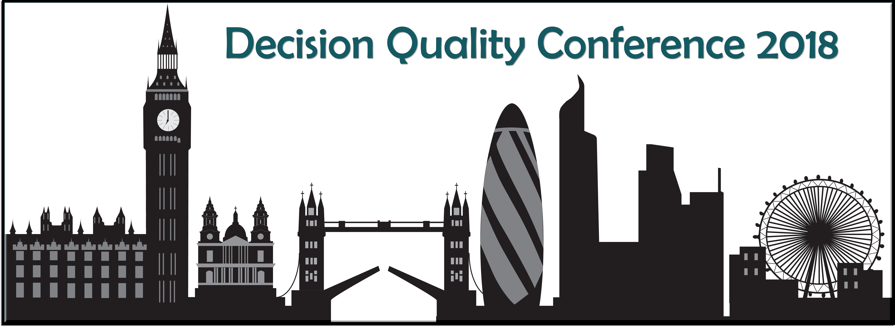
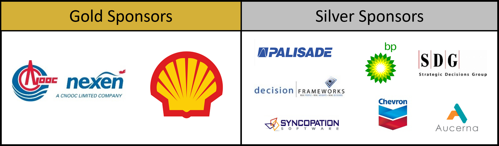

Join the Decision Quality Conference 2018 in London – Nov 5-6
Post Conference short course – Nov 7
Don’t miss out on this unique opportunity - one-day short course on Leading Decision Quality offered by two Past Presidents and decision professional fellows: Carl Spetzler, President of Strategic Decisions Group and Ellen Coopersmith, President of Decision Frameworks.
The London Decision Quality Group, the European Decision Professionals Network (EDPN) and the Society of Decision Professionals (SDP)
are pleased to invite you to join the

Decision Quality: Making Good Outcomes More Likely
This multi-industry conference is being held at the Geological Society in London, on Monday 5th and Tuesday 6th November 2018, where global experts will share practical guidance on improving business decision making.
The event will be structured around the six elements of decision quality, and will provide an opportunity for decision professionals to improve skills and share knowledge on various applications of Decision Quality in business and government.
For 2018 we have secured a strong speaker line-up:
- Carl Spetzler, CEO, Strategic Decisions Group
- Russell Smith, VP Global Concept Developments, BP Plc
- Cath Bishop, Olympic Rower, Leadership Consultant & Speaker
- Jeremy Brann, Head of Economic Excellence, Shell Exploration & Production
- James (Jim) Weatherall, Head of the Advanced Analytics Centre, AstraZeneca
- Dominic Brittain, Principal, Dominic Brittain and Associates
- Reidar Bratvold, Professor of Decision and Data Analytics at the University of Stavanger and the Norwegian Institute of Technology
- Ellen Coopersmith, Founder, Decision Frameworks
- Ray Riddoch, Managing Director UK, Senior Vice President Europe, Nexen Petroleum U.K. Ltd
Additional features:
– Software Roadshow at lunch time on both days
– Panel Session on Embedding Decision Quality
– Followed by an optional one-day short course on Leading Decision Quality run by the SDP on 7th November.
We especially want to thank our conference sponsors:

Conference Programme and more